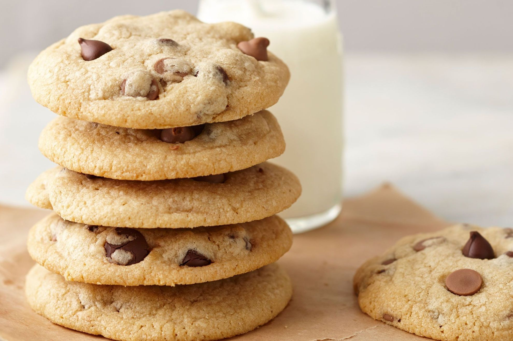

Cookies

Description
Chocolate chip cookies are a classic afternoon tea treat made from buttery dough studded with chunks of melted chocolate. We’ve tried so many tweaks and variations over the years (with a few fails along the way) to try and nail the best chocolate chip cookie recipe, but we think we’ve finally cracked it!
Ingredients
- 150g butter, softened
- 1/2 cup brown sugar
- 1/2 cup caster sugar
- 1 egg
- 1 tsp vanilla extract
- 1 3/4 cups plain flour
- 1/2 cup milk chocolate bits
- 1/2 cup dark chocolate bits
- 1 tbsp extra milk chocolate chips
- 1 tbsp extra dark chocolate chips
Steps
- Preheat oven to 180°C or 160°C fan-forced. Line 2 baking trays with baking paper. Using an electric mixer or whisking by hand, beat butter, brown sugar and caster sugar for 1-2 minutes or until smooth and well combined. Beat in egg and vanilla until combined.
- Stir in flour. Stir in milk choc bits and dark choc bits. Roll 2 level tablespoonfuls of mixture into balls and place on prepared trays, 3cm apart. Press down slightly. Decorate with extra dark choc bits and extra milk choc chips.
- Bake for 15-18 minutes or until light golden and cooked. Transfer to a wire rack to cool. Store in an airtight container for up to 1 week.
Home